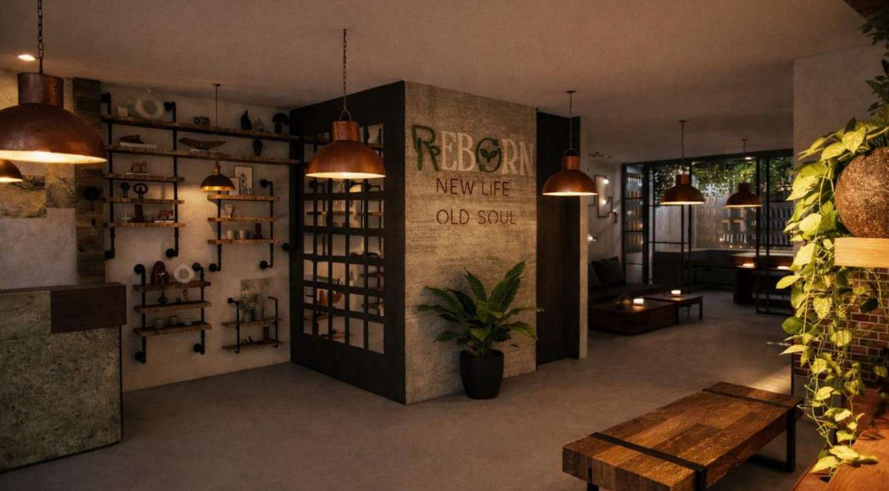
REBORN
Un concept store dédié au mobilier et à la décoration éco-responsables — où l'on vend, répare et personnalise. Le projet développe l'identité complète : logo, palette, site web, puis l'espace, du plan aux perspectives.
- Type
- Retail & ateliers — éco-conception
- Périmètre
- Identité visuelle + espace
- Statut
- Concept (non réalisé)
- Palette
- Olive #98A869 · Écru #F2F0EF · Noir #111111
01
Le concept
Reborn ne vend pas des meubles : il vend une seconde vie. Le parcours client est construit comme un cycle — acheter, abîmer, réparer, transformer — matérialisé dans l'organisation même du magasin.
Le programme distingue trois zones qui se répondent : la vitrine (exposition et vente), l'atelier visible (réparation, customisation, café-librairie) et la cour intérieure qui ramène lumière verte et respiration au centre du plan. Back-office, stockage et vestiaires restent en retrait, côté service.
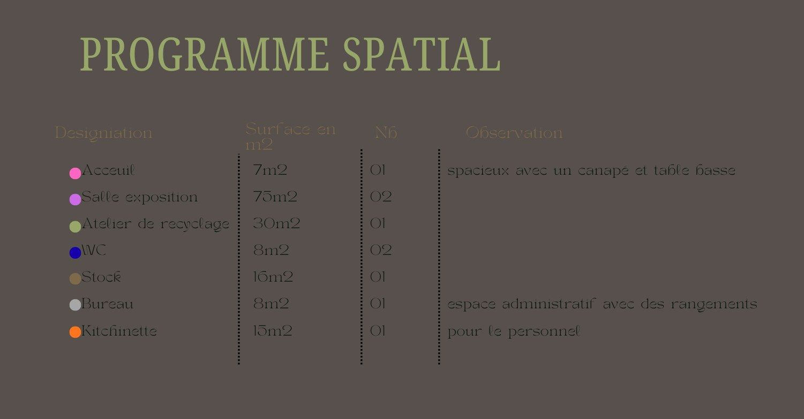
02
Identité visuelle
REBORN
- Olive#98A869
- Neutre clair#F2F0EF
- Noir#111111
Une seule famille typographique, deux usages : le serif pour la signature, le sans-serif pour l'information. L'olive n'est jamais décoratif — il désigne ce qui est vivant, réparable.
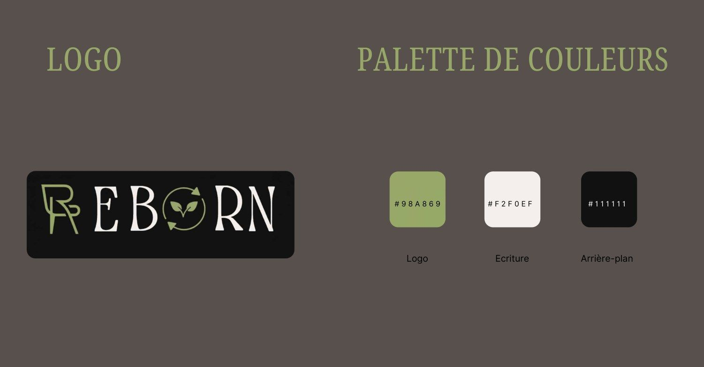
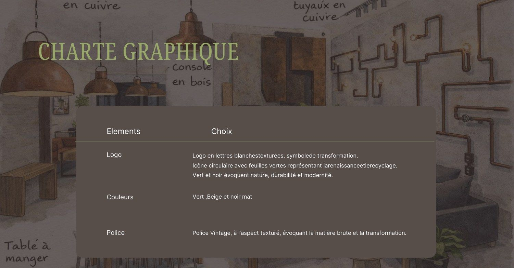
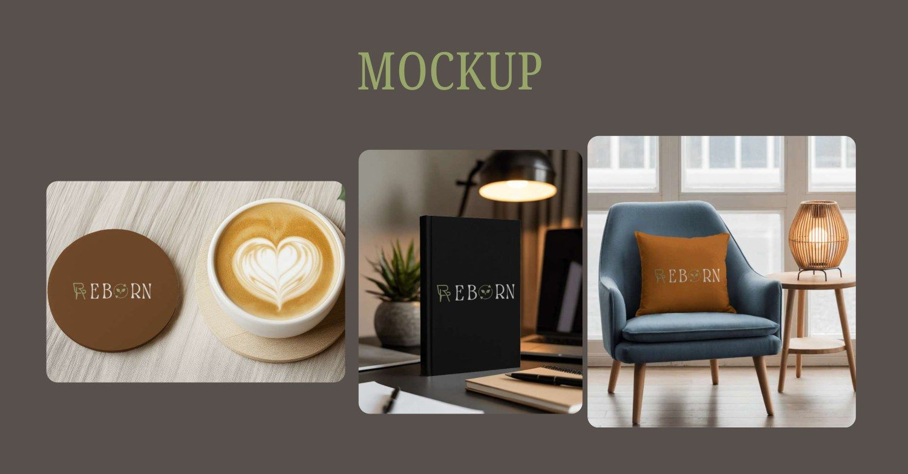
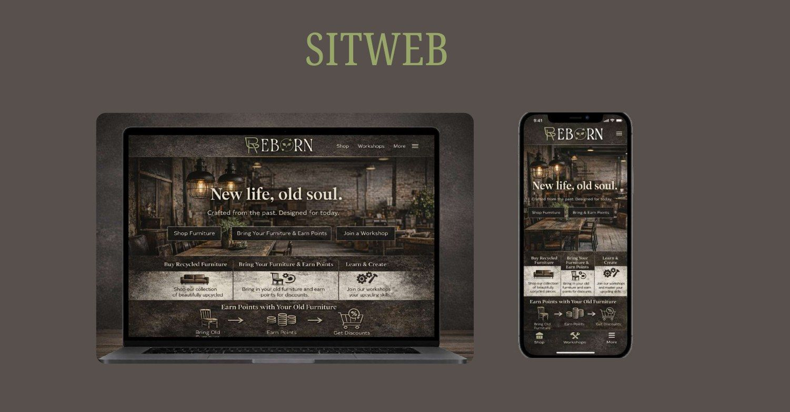
03
L'espace, du plan au détail
Plan d'aménagement, revêtements & plafonds, coupe et élévations — dessinés pour que l'atelier reste visible depuis la rue.
Cliquez pour agrandir les documents.
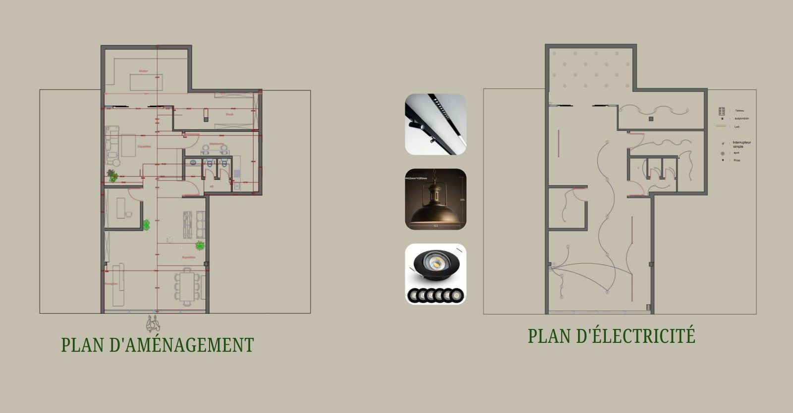
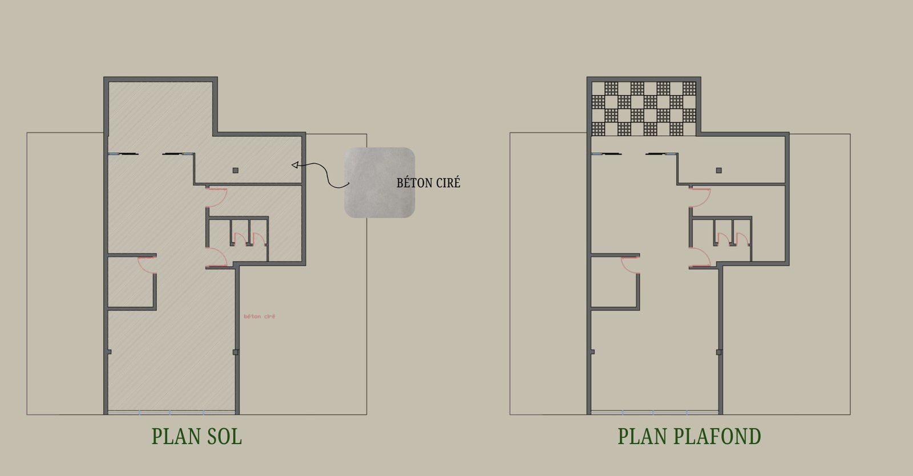
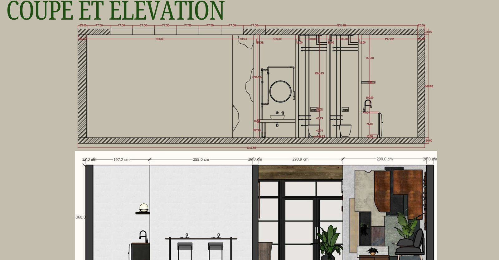
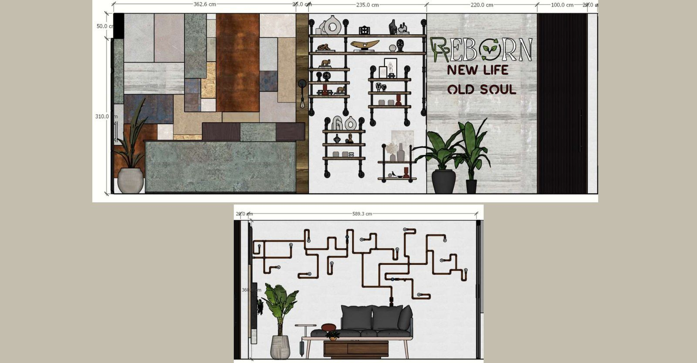
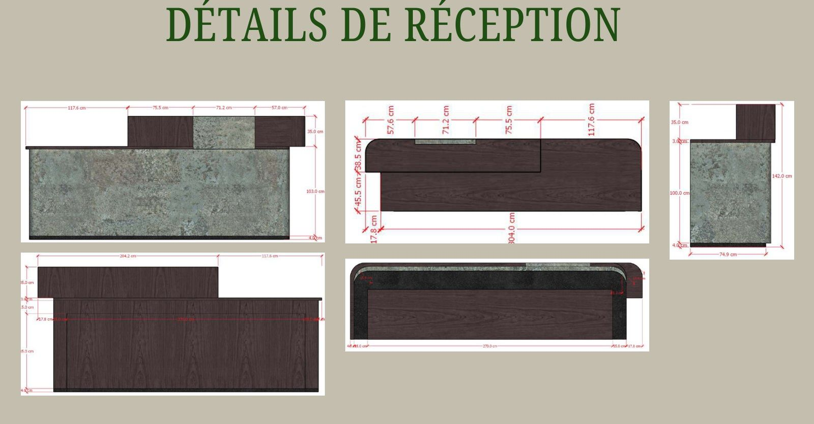
04
Perspectives

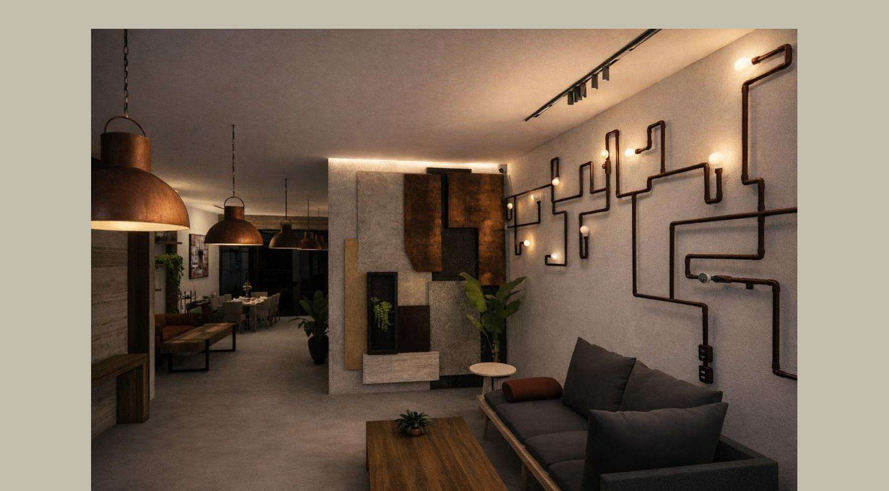
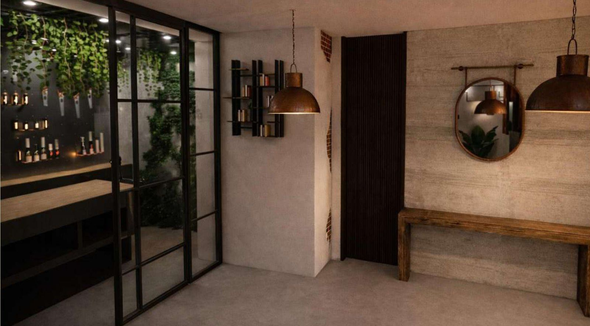
Rendus 3D issus de la modélisation du projet (SketchUp / V-Ray). Le concept reste une étude personnelle : aucune boutique construite ni marque cliente.